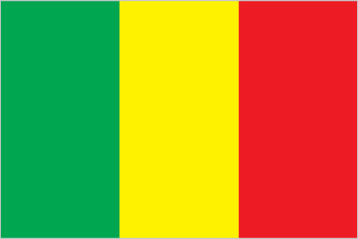
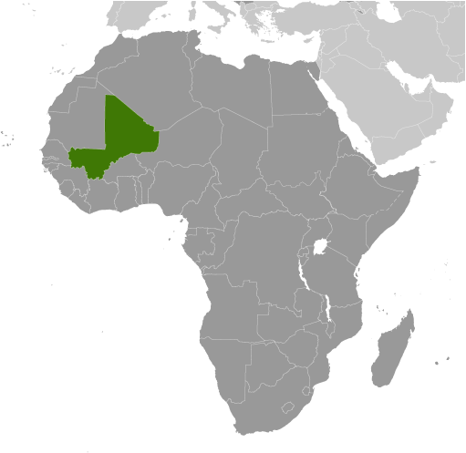
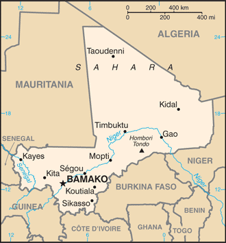

Africa :: MALI
Introduction :: MALI
-
The Sudanese Republic and Senegal became independent of France in 1960 as the Mali Federation. When Senegal withdrew after only a few months, what formerly made up the Sudanese Republic was renamed Mali. Rule by dictatorship was brought to a close in 1991 by a military coup that ushered in a period of democratic rule. President Alpha KONARE won Mali's first two democratic presidential elections in 1992 and 1997. In keeping with Mali's two-term constitutional limit, he stepped down in 2002 and was succeeded by Amadou Toumani TOURE, who was elected to a second term in a 2007 election that was widely judged to be free and fair. Malian returnees from Libya in 2011 exacerbated tensions in northern Mali, and Tuareg ethnic militias rebelled in January 2012. Low- and mid-level soldiers, frustrated with the poor handling of the rebellion, overthrew TOURE on 22 March. Intensive mediation efforts led by the Economic Community of West African States (ECOWAS) returned power to a civilian administration in April with the appointment of Interim President Dioncounda TRAORE. The post-coup chaos led to rebels expelling the Malian military from the country's three northern regions and allowed Islamic militants to set up strongholds. Hundreds of thousands of northern Malians fled the violence to southern Mali and neighboring countries, exacerbating regional food shortages in host communities. An international military intervention to retake the three northern regions began in January 2013 and within a month most of the north had been retaken. In a democratic presidential election conducted in July and August of 2013, Ibrahim Boubacar KEITA was elected president. The Malian Government and northern armed groups signed an internationally-mediated peace accord in June 2015.
Geography :: MALI
-
interior Western Africa, southwest of Algeria, north of Guinea, Cote d'Ivoire, and Burkina Faso, west of Niger17 00 N, 4 00 WAfricatotal: 1,240,192 sq kmland: 1,220,190 sq kmwater: 20,002 sq kmcountry comparison to the world: 25slightly less than twice the size of Texastotal: 7,908 kmborder countries (7): Algeria 1,359 km, Burkina Faso 1,325 km, Cote d'Ivoire 599 km, Guinea 1,062 km, Mauritania 2,236 km, Niger 838 km, Senegal 489 km0 km (landlocked)none (landlocked)subtropical to arid; hot and dry (February to June); rainy, humid, and mild (June to November); cool and dry (November to February)mostly flat to rolling northern plains covered by sand; savanna in south, rugged hills in northeastmean elevation: 343 melevation extremes: lowest point: Senegal River 23 mhighest point: Hombori Tondo 1,155 mgold, phosphates, kaolin, salt, limestone, uranium, gypsum, granite, hydropowernote: bauxite, iron ore, manganese, tin, and copper deposits are known but not exploitedagricultural land: 34.1%arable land 5.6%; permanent crops 0.1%; permanent pasture 28.4%forest: 10.2%other: 55.7% (2011 est.)3,780 sq km (2012)the overwhelming majority of the population lives in the southern half of the country, with greater density along the border with Burkina Fasohot, dust-laden harmattan haze common during dry seasons; recurring droughts; occasional Niger River floodingdeforestation; soil erosion; desertification; inadequate supplies of potable waterparty to: Biodiversity, Climate Change, Climate Change-Kyoto Protocol, Desertification, Endangered Species, Hazardous Wastes, Law of the Sea, Ozone Layer Protection, Wetlands, Whalingsigned, but not ratified: none of the selected agreementslandlocked; divided into three natural zones: the southern, cultivated Sudanese; the central, semiarid Sahelian; and the northern, arid Saharan
People and Society :: MALI
-
17,885,245 (July 2017 est.)country comparison to the world: 64noun: Malian(s)adjective: MalianBambara 34.1%, Fulani (Peul) 14.7%, Sarakole 10.8%, Senufo 10.5%, Dogon 8.9%, Malinke 8.7%, Bobo 2.9%, Songhai 1.6%, Tuareg 0.9%, other Malian 6.1%, from member of Economic Community of West African States 0.3%, other 0.4% (2012-13 est.)French (official), Bambara 46.3%, Peul/Foulfoulbe 9.4%, Dogon 7.2%, Maraka/Soninke 6.4%, Malinke 5.6%, Sonrhai/Djerma 5.6%, Minianka 4.3%, Tamacheq 3.5%, Senoufo 2.6%, Bobo 2.1%, unspecified 0.7%, other 6.3%note: Mali has 13 national languages in addition to its official language (2009 est.)Muslim 94.8%, Christian 2.4%, Animist 2%, none 0.5%, unspecified 0.3% (2009 est.)Mali’s total population is expected to double by 2035; its capital Bamako is one of the fastest-growing cities in Africa. A young age structure, a declining mortality rate, and a sustained high total fertility rate of 6 children per woman – the third highest in the world – ensure continued rapid population growth for the foreseeable future. Significant outmigration only marginally tempers this growth. Despite decreases, Mali’s infant, child, and maternal mortality rates remain among the highest in sub-Saharan Africa because of limited access to and adoption of family planning, early childbearing, short birth intervals, the prevalence of female genital cutting, infrequent use of skilled birth attendants, and a lack of emergency obstetrical and neonatal care.Mali’s high total fertility rate has been virtually unchanged for decades, as a result of the ongoing preference for large families, early childbearing, the lack of female education and empowerment, poverty, and extremely low contraceptive use. Slowing Mali’s population growth by lowering its birth rate will be essential for poverty reduction, improving food security, and developing human capital and the economy.Mali has a long history of seasonal migration and emigration driven by poverty, conflict, demographic pressure, unemployment, food insecurity, and droughts. Many Malians from rural areas migrate during the dry period to nearby villages and towns to do odd jobs or to adjoining countries to work in agriculture or mining. Pastoralists and nomads move seasonally to southern Mali or nearby coastal states. Others migrate long term to Mali’s urban areas, Cote d’Ivoire, other neighboring countries, and in smaller numbers to France, Mali’s former colonial ruler. Since the early 1990s, Mali’s role has grown as a transit country for regional migration flows and illegal migration to Europe. Human smugglers and traffickers exploit the same regional routes used for moving contraband drugs, arms, and cigarettes.Between early 2012 and 2013, renewed fighting in northern Mali between government forces and Tuareg secessionists and their Islamist allies, a French-led international military intervention, as well as chronic food shortages, caused the displacement of hundreds of thousands of Malians. Most of those displaced domestically sought shelter in urban areas of southern Mali, except for pastoralist and nomadic groups, who abandoned their traditional routes, gave away or sold their livestock, and dispersed into the deserts of northern Mali or crossed into neighboring countries. Almost all Malians who took refuge abroad (mostly Tuareg and Maure pastoralists) stayed in the region, largely in Mauritania, Niger, and Burkina Faso.0-14 years: 48.17% (male 4,330,370/female 4,285,171)15-24 years: 18.84% (male 1,604,914/female 1,765,479)25-54 years: 26.26% (male 2,171,171/female 2,525,109)55-64 years: 3.7% (male 335,023/female 326,910)65 years and over: 3.03% (male 270,856/female 270,242) (2017 est.)total dependency ratio: 101.9youth dependency ratio: 96.8elderly dependency ratio: 5.1potential support ratio: 19.5 (2015 est.)total: 15.8 yearsmale: 15.1 yearsfemale: 16.4 years (2017 est.)country comparison to the world: 2273.02% (2017 est.)country comparison to the world: 943.9 births/1,000 population (2017 est.)country comparison to the world: 39.8 deaths/1,000 population (2017 est.)country comparison to the world: 43-3.9 migrant(s)/1,000 population (2017 est.)country comparison to the world: 183the overwhelming majority of the population lives in the southern half of the country, with greater density along the border with Burkina Fasourban population: 41.4% of total population (2017)rate of urbanization: 4.97% annual rate of change (2015-20 est.)BAMAKO (capital) 2.515 million (2015)at birth: 1.03 male(s)/female0-14 years: 1.01 male(s)/female15-24 years: 0.91 male(s)/female25-54 years: 0.87 male(s)/female55-64 years: 1 male(s)/female65 years and over: 1 male(s)/femaletotal population: 0.95 male(s)/female (2016 est.)18.8 yearsnote: median age at first birth among women 25-29 (2012/13 est.)587 deaths/100,000 live births (2015 est.)country comparison to the world: 16total: 69.5 deaths/1,000 live birthsmale: 75.3 deaths/1,000 live birthsfemale: 63.5 deaths/1,000 live births (2017 est.)country comparison to the world: 9total population: 60.3 yearsmale: 58.2 yearsfemale: 62.5 years (2017 est.)country comparison to the world: 2046.01 children born/woman (2017 est.)country comparison to the world: 315.6% (2015)6.9% of GDP (2014)country comparison to the world: 830.09 physicians/1,000 population (2010)0.1 beds/1,000 population (2010)improved:urban: 96.5% of populationrural: 64.1% of populationtotal: 77% of populationunimproved:urban: 3.5% of populationrural: 35.9% of populationtotal: 23% of population (2015 est.)improved:urban: 37.5% of populationrural: 16.1% of populationtotal: 24.7% of populationunimproved:urban: 62.5% of populationrural: 83.9% of populationtotal: 75.3% of population (2015 est.)1% (2016 est.)country comparison to the world: 44110,000 (2016 est.)country comparison to the world: 406,100 (2016 est.)country comparison to the world: 27degree of risk: very highfood or waterborne diseases: bacterial and protozoal diarrhea, hepatitis A, and typhoid fevervectorborne diseases: malaria and dengue feverwater contact disease: schistosomiasisrespiratory disease: meningococcal meningitisanimal contact disease: rabies (2016)8.6% (2016)country comparison to the world: 1493.6% of GDP (2014)country comparison to the world: 83definition: age 15 and over can read and writetotal population: 33.1%male: 45.1%female: 22.2% (2015 est.)total: 8 yearsmale: 9 yearsfemale: 7 years (2011)total: 11.1%male: NAfemale: NA (2014 est.)
Government :: MALI
-
conventional long form: Republic of Maliconventional short form: Malilocal long form: Republique de Malilocal short form: Maliformer: French Sudan and Sudanese Republicetymology: name derives from the West African Mali Empire of the 13th to 16th centuries A.D.semi-presidential republicname: Bamakogeographic coordinates: 12 39 N, 8 00 Wtime difference: UTC 0 (5 hours ahead of Washington, DC, during Standard Time)8 regions (regions, singular - region), 1 district*; District de Bamako*, Gao, Kayes, Kidal, Koulikoro, Mopti, Segou, Sikasso, Tombouctou (Timbuktu); note - two new regions, Menaka and Taoudenni, were reportedly created in early 2016, but these have not yet been vetted by the US Board on Geographic Names22 September 1960 (from France)Independence Day, 22 September (1960)history: several previous; latest drafted August 1991, approved by referendum 12 January 1992, effective 25 February 1992, suspended briefly in 2012amendments: roposed by the president of the republic or by members of the National Assembly; passage requires two-thirds majority vote by the Assembly and approval in a referendum; constitutional sections on the integrity of the state, its republican and secular form of government, and its multiparty system cannot be amended; amended 1999 (2017)civil law system based on the French civil law model and influenced by customary law; judicial review of legislative acts in the Constitutional Courthas not submitted an ICJ jurisdiction declaration; accepts ICCt jurisdictioncitizenship by birth: nocitizenship by descent only: at least one parent must be a citizen of Malidual citizenship recognized: yesresidency requirement for naturalization: 5 years18 years of age; universalchief of state: President Ibrahim Boubacar KEITA (since 4 September 2013)head of government: Prime Minister Abdoulaye Idrissa MAIGA (since 8 April 2017)cabinet: Council of Ministers appointed by the prime ministerelections/appointments: president directly elected by absolute majority popular vote in 2 rounds if needed for a 5-year term (eligible for a second term); election last held on 28 July 2013 with a runoff on 11 August 2013 (election delayed from April 2012 due to a coup in March 2012); prime minister appointed by the presidentelection results: Ibrahim Boubacar KEITA elected president in second round; percent of vote - Ibrahim Boubacar KEITA (RPM) 77.6%, Soumaila CISSE (URD) 22.4%description: unicameral National Assembly or Assemblee Nationale (147 seats; members directly elected in single-seat constituencies by absolute majority vote in 2 rounds if needed; 13 seats reserved for citizens living abroad; members serve 5-year terms)elections: last held on 24 November and 15 December 2013 (next to be held in 2018); note - the scheduled July 2012 election was canceled due to a coup d'etat and the Tuareg Rebellionelection results: percent of vote by party - NA; seats by party - RPM 66, URD 17, ADEMA 16, FARE 6, CODEM 5, SADI 5, CNID 4, other 24, independent 4highest court(s): Supreme Court or Cour Supreme (consists of 19 members organized into 3 civil chambers and a criminal chamber); Constitutional Court (consists of 9 members)judge selection and term of office: Supreme Court members appointed by the Ministry of Justice to serve 5-year terms; Constitutional Court members selected - 3 each by the president, the National Assembly, and the Supreme Council of the Magistracy; members serve single renewable 7-year termssubordinate courts: Court of Appeal; High Court of Justice (jurisdiction limited to cases of high treason or criminal offenses by the president or ministers while in office); magistrate courts; first instance courts; labor dispute courts; special court of state securityAfrican Solidarity for Democracy and Independence or SADI [Oumar MARIKO]Alliance for Democracy in Mali-Pan-African Party for Liberty, Solidarity, and Justice or ADEMA-PASJ [Tiemoko SANGARE]Alliance for Democracy and Progress or ADP (coalition includes ADEMA and URD)Alliance for the Solidarity of Mali-Convergence of Patriotic Forces or ASMA-CFP [Soumeylou Boubeye MAIGA]Alternative Forces for Renewal and Emergence or FARE [Modibo SIDIBE]Convergence for the Development of Mali or CODEM [Housseyni Amion GUINDO]Economic and Social Development Party or PDES [Jamille BITTAR]Front for Democracy and the Republic or FDR (coalition of smaller opposition parties)National Congress for Democratic Initiative or CNID [Mountaga TALL]Party for National Renewal or PARENA [Tiebile DRAME]Patriotic Movement for Renewal or MPR [Choguel Kokalla MAIGA]Rally for Mali or RPM [Ibrahim Boubacar KEITA]Union for Republic and Democracy or URD [Younoussi TOURE]Malian Company for Textile Development or CMDTMalian Defence Forceother: Islamic authoritiesACP, AfDB, AU, CD, ECOWAS, EITI (compliant country), FAO, FZ, G-77, IAEA, IBRD, ICAO, ICCt, ICRM, IDA, IDB, IFAD, IFC, IFRCS, ILO, IMF, Interpol, IOC, IOM, IPU, ISO, ITSO, ITU, ITUC (NGOs), MIGA, MONUSCO, NAM, OIC, OIF, OPCW, UN, UNAMID, UNCTAD, UNESCO, UNIDO, UNISFA, UNMISS, UNWTO, UPU, WADB (regional), WAEMU, WCO, WFTU (NGOs), WHO, WIPO, WMO, WTOchief of mission: Ambassador (vacant); Charge d'Affaires Mohamed CISSE (since 13 April 2017)chancery: 2130 R Street NW, Washington, DC 20008telephone: [1] (202) 332-2249, 939-8950FAX: [1] (202) 332-6603chief of mission: Ambassador Paul A. FOLMSBEE (since 3 June 2015)embassy: located off the Roi Bin Fahad Aziz Bridge west of the Bamako central districtmailing address: ACI 2000, Rue 243, Porte 297, Bamakotelephone: [223] 2070-2300FAX: [223] 2070-2479three equal vertical bands of green (hoist side), yellow, and rednote: uses the popular Pan-African colors of Ethiopia; the colors from left to right are the same as those of neighboring Senegal (which has an additional green central star) and the reverse of those on the flag of neighboring GuineaGreat Mosque of Djenne; national colors: green, yellow, redname: "Le Mali" (Mali)lyrics/music: Seydou Badian KOUYATE/Banzoumana SISSOKOnote: adopted 1962; also known as "Pour L'Afrique et pour toi, Mali" (For Africa and for You, Mali) and "A ton appel Mali" (At Your Call, Mali)
Economy :: MALI
-
Among the 25 poorest countries in the world, landlocked Mali depends on gold mining and agricultural exports for revenue. The country's fiscal status fluctuates with gold and agricultural commodity prices and the harvest; cotton and gold exports make up around 80% of export earnings. Mali remains dependent on foreign aid.Economic activity is largely confined to the riverine area irrigated by the Niger River; about 65% of Mali’s land area is desert or semidesert. About 10% of the population is nomadic and about 80% of the labor force is engaged in farming and fishing. Industrial activity is concentrated on processing farm commodities. The government subsidizes the production of cereals to decrease the country’s dependence on imported foodstuffs and to reduce its vulnerability to food price shocks.Mali is developing its iron ore extraction industry to diversify foreign exchange earnings away from gold, but the pace will depend on global price trends. Although the political coup in 2012 slowed Mali’s growth, the economy has since bounced back, with GDP growth above 5% in 2014-16, although physical insecurity, high population growth, corruption, weak infrastructure, and low levels of human capital continue to constrain economic development. Higher rainfall should help boost cotton output in 2017, and the country’s 2017 budget calls for a more than 10% increase in spending, much of which will be devoted to infrastructure and agriculture. However, strong downside risks exist in the form of renewed political turmoil. Corruption is endemic.$38.25 billion (2016 est.)$35.7 billion (2015 est.)$33.33 billion (2014 est.)note: data are in 2016 dollarscountry comparison to the world: 117$14.04 billion (2016 est.)5.8% (2016 est.)6% (2015 est.)7% (2014 est.)country comparison to the world: 31$2,100 (2016 est.)$2,000 (2015 est.)$2,000 (2014 est.)note: data are in 2016 dollarscountry comparison to the world: 20110.3% of GDP (2016 est.)12.1% of GDP (2015 est.)12.9% of GDP (2014 est.)country comparison to the world: 153household consumption: 72.6%government consumption: 16.5%investment in fixed capital: 17.1%investment in inventories: 0.4%exports of goods and services: 20.4%imports of goods and services: -27% (2016 est.)agriculture: 40.7%industry: 19%services: 40.2% (2016 est.)cotton, millet, rice, corn, vegetables, peanuts; cattle, sheep, goatsfood processing; construction; phosphate and gold mining1.9% (2016 est.)country comparison to the world: 1156.272 million (2016 est.)country comparison to the world: 72agriculture: 80%industry and services: 20% (2005 est.)8.1% (2016 est.)8.1% (2015 est.)country comparison to the world: 10436.1% (2005 est.)lowest 10%: 3.5%highest 10%: 25.8% (2010 est.)40.1 (2001)50.5 (1994)country comparison to the world: 61revenues: $2.567 billionexpenditures: $3.12 billion (2016 est.)18.4% of GDP (2016 est.)country comparison to the world: 165-4% of GDP (2016 est.)country comparison to the world: 14129.7% of GDP (2016 est.)29.3% of GDP (2015 est.)country comparison to the world: 162calendar year-1.8% (2016 est.)1.4% (2015 est.)country comparison to the world: 416% (31 December 2010)4.25% (31 December 2009)country comparison to the world: 75.3% (31 December 2016 est.)5.15% (31 December 2015 est.)country comparison to the world: 138$2.687 billion (31 December 2016 est.)$2.573 billion (31 December 2015 est.)country comparison to the world: 121$3.858 billion (31 December 2016 est.)$3.715 billion (31 December 2015 est.)country comparison to the world: 134$2.931 billion (31 December 2016 est.)$2.822 billion (31 December 2015 est.)country comparison to the world: 138$NA$-996 million (2016 est.)$-685.1 million (2015 est.)country comparison to the world: 123$2.803 billion (2016 est.)$2.715 billion (2015 est.)country comparison to the world: 126cotton, gold, livestockSwitzerland 30.4%, India 12.2%, Ukraine 5.1%, China 5.1%, Burkina Faso 4.9%, Senegal 4.3%, France 4%, South Africa 4% (2016)$3.443 billion (2016 est.)$3.192 billion (2015 est.)country comparison to the world: 137petroleum, machinery and equipment, construction materials, foodstuffs, textilesSenegal 12.2%, China 12.2%, France 10.3%, Benin 8.6%, Cote dIvoire 8.4% (2016)$3.981 billion (31 December 2016 est.)$3.668 billion (31 December 2015 est.)country comparison to the world: 138$3.266 billion (31 December 2016 est.)$3.101 billion (31 December 2015 est.)country comparison to the world: 110$62.2 million (31 December 2016 est.)$54.2 million (31 December 2015 est.)country comparison to the world: 106Communaute Financiere Africaine francs (XOF) per US dollar -593.01 (2016 est.)593.01 (2015 est.)591.45 (2014 est.)494.42 (2013 est.)510.53 (2012 est.)
Energy :: MALI
-
population without electricity: 11,400,000electrification - total population: 26%electrification - urban areas: 53%electrification - rural areas: 9% (2013)2.175 billion kWh (2015 est.)country comparison to the world: 1382.023 billion kWh (2015 est.)country comparison to the world: 1430 kWh (2016 est.)country comparison to the world: 1680 kWh (2016 est.)country comparison to the world: 173590,000 kW (2015 est.)country comparison to the world: 14067.8% of total installed capacity (2015 est.)country comparison to the world: 1070% of total installed capacity (2015 est.)country comparison to the world: 14131.2% of total installed capacity (2015 est.)country comparison to the world: 691% of total installed capacity (2015 est.)country comparison to the world: 1390 bbl/day (2016 est.)country comparison to the world: 1700 bbl/day (2014 est.)country comparison to the world: 1620 bbl/day (2014 est.)country comparison to the world: 1610 bbl (1 January 2017 es)country comparison to the world: 1680 bbl/day (2014 est.)country comparison to the world: 1747,500 bbl/day (2015 est.)country comparison to the world: 1630 bbl/day (2014 est.)country comparison to the world: 1797,486 bbl/day (2014 est.)country comparison to the world: 1500 cu m (2013 est.)country comparison to the world: 1690 cu m (2013 est.)country comparison to the world: 2080 cu m (2013 est.)country comparison to the world: 1490 cu m (2013 est.)country comparison to the world: 1550 cu m (1 January 2014 es)country comparison to the world: 172800,000 Mt (2013 est.)country comparison to the world: 171
Communications :: MALI
-
total subscriptions: 200,812subscriptions per 100 inhabitants: 1 (July 2016 est.)country comparison to the world: 136total: 20,182,160subscriptions per 100 inhabitants: 116 (July 2016 est.)country comparison to the world: 50general assessment: domestic system improving; increasing use of local radio loops to extend network coverage to remote areasdomestic: fixed-line subscribership remains less than 1 per 100 persons; mobile-cellular subscribership has increased sharply to over 115 per 100 personsinternational: country code - 223; satellite communications center and fiber-optic links to neighboring countries; satellite earth stations - 2 Intelsat (1 Atlantic Ocean, 1 Indian Ocean) (2016)national public TV broadcaster; 2 privately owned companies provide subscription services to foreign multi-channel TV packages; national public radio broadcaster supplemented by a large number of privately owned and community broadcast stations; transmissions of multiple international broadcasters are available (2007).mltotal: 1,940,978percent of population: 11.1% (July 2016 est.)country comparison to the world: 38
Transportation :: MALI
-
number of registered air carriers: 1inventory of registered aircraft operated by air carriers: 2 (2015)TZ, TT (2016)25 (2013)country comparison to the world: 129total: 8over 3,047 m: 12,438 to 3,047 m: 41,524 to 2,437 m: 2914 to 1,523 m: 1 (2017)total: 171,524 to 2,437 m: 3914 to 1,523 m: 9under 914 m: 5 (2013)2 (2013)total: 593 kmnarrow gauge: 593 km 1.000-m gauge (2014)country comparison to the world: 111total: 22,474 kmpaved: 5,522 kmunpaved: 16,952 km (2009)country comparison to the world: 1031,800 km (downstream of Koulikoro; low water levels on the River Niger cause problems in dry years; in the months before the rainy season the river is not navigable by commercial vessels) (2011)country comparison to the world: 43river port(s): Koulikoro (Niger)
Military and Security :: MALI
-
2.63% of GDP (2016)2.43% of GDP (2015)1.56% of GDP (2014)1.2% of GDP (2013)1.2% of GDP (2012)country comparison to the world: 68Malian Armed Forces: Army (Armee de Terre), Republic of Mali Air Force (Force Aerienne de la Republique du Mali, FARM), National Guard (Garde National du Mali) (2013)18 years of age for selective compulsory and voluntary military service; 2-year conscript service obligation (2012)
Transnational Issues :: MALI
-
demarcation is underway with Burkina Fasorefugees (country of origin): 15,298 (Mauritania) (2016)IDPs: 58,594 (Tuareg rebellion since 2012) (2017)current situation: Mali is a source, transit, and destination country for men, women, and children subjected to forced labor and sex trafficking; internal trafficking is more prevalent than transnational trafficking, but foreign women and girls are forced into domestic servitude, agricultural labor, and support roles in gold mines, as well as subjected to sex trafficking; Malian boys are forced to work in agricultural settings, gold mines, the informal commercial sector and to beg within Mali and neighboring countries; Malians and other Africans who travel through Mali to Mauritania, Algeria, or Libya in hopes of reaching Europe are particularly at risk of becoming victims of human trafficking; men and boys, primarily of Songhai ethnicity, are subjected to debt bondage in the salt mines of Taoudenni in northern Mali; some members of Mali's Tamachek community are subjected to hereditary slavery-related practices; Malian women and girls are victims of sex trafficking in Gabon, Libya, Lebanon, and Tunisia; the recruitment of child soldiers by armed groups in northern Mali decreasedtier rating: Tier 2 Watch List - Mali does not fully comply with the minimum standards for the elimination of trafficking; however, it is making significant efforts to do so; in 2014, Mali was granted a waiver from an otherwise required downgrade to Tier 3 because its government has a written plan that, if implemented would constitute making significant efforts to bring itself into compliance with the minimum standards for the elimination of trafficking; officials failed to distribute the 2012 anti-trafficking law to judicial and law enforcement personnel, perpetuating a lack of understanding and awareness of the legislation; anti-trafficking law enforcement efforts decreased in 2014, with only one case investigated and no prosecutions or convictions; fewer victims were identified, and the government did not support the privately funded NGOs and international organizations it relied upon to provide victims with services; the government did not conduct any awareness-raising campaigns, workshops, or training sessions (2015)